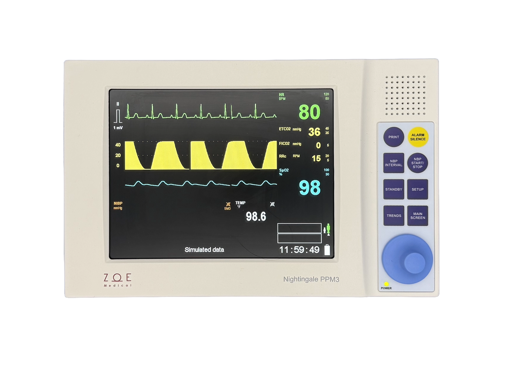

Nightingale PPM3
Procedure & Patient Monitor
A compact, full-featured patient monitor purpose-built for oral surgery suites and outpatient procedure rooms. Real-time EMR connectivity, 8.4" all-angle-view display, and a comprehensive parameter set including optional Masimo-Phasein capnography.
Ready to order or need more info?
We quote directly — no distributors, no markup.
Request a quote for this productOr call (978) 887-1410
General specifications
ECG
NIBP
Pulse oximetry (SpO₂)
CO₂ — Masimo Phasein® (option)
Temperature
Electrical
Environmental
Connectivity
Standards conformance
Key features
8.4" all-angle-view display
Wide-viewing-angle color display keeps waveforms and vitals readable from anywhere in the procedure room — without repositioning the monitor.
Real-time EMR connectivity
Direct real-time connection to major oral surgery EMR systems. Patient data flows automatically into the record — no manual transcription.
Optional Masimo Phasein® capnography
Side-stream CO₂ monitoring with EtCO₂, IPI, FiCO₂, and RR — essential for sedation monitoring in oral surgery environments.